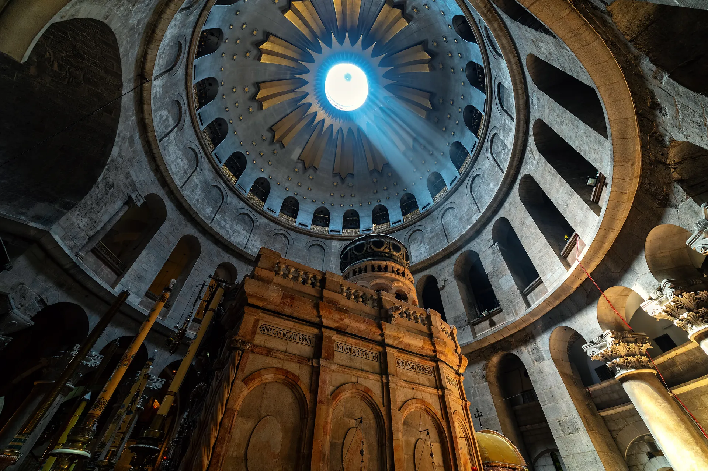

A doorway to the Orthodox Christian faith — for those exploring, those preparing for reception, and those who have walked this path for years.
Three doorways into the Orthodox Church — for those exploring, for those preparing, and for those looking for a parish home.
For the Inquirer
Orthodox Christianity is the ancient, unbroken expression of the Christian faith — the Church of the Apostles, the Church Fathers, and the Seven Ecumenical Councils. It is not a reformation or a return, but a continuous living tradition stretching from Pentecost to the present day.
At the heart of Orthodoxy is theosis — union with God. The Christian life is not merely moral improvement or doctrinal assent, but a transformative journey into the life of the Holy Trinity, made possible through the Incarnation of Jesus Christ.
The Orthodox Church holds together Scripture and Holy Tradition as one unbroken river of revelation, expressed through the Divine Liturgy, the Sacraments, the Councils, and the writings of the Holy Fathers.
begin the journey →